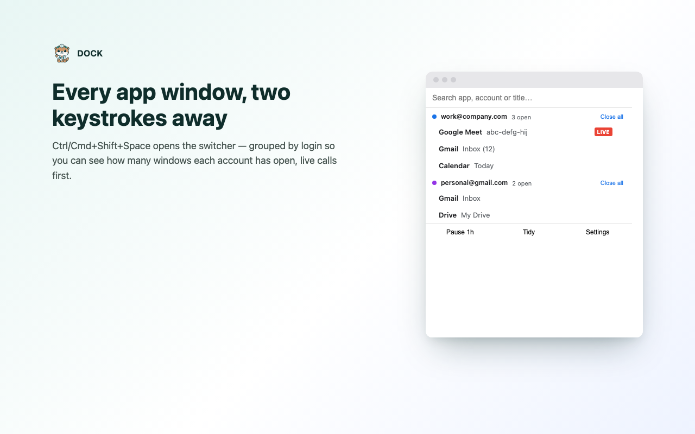
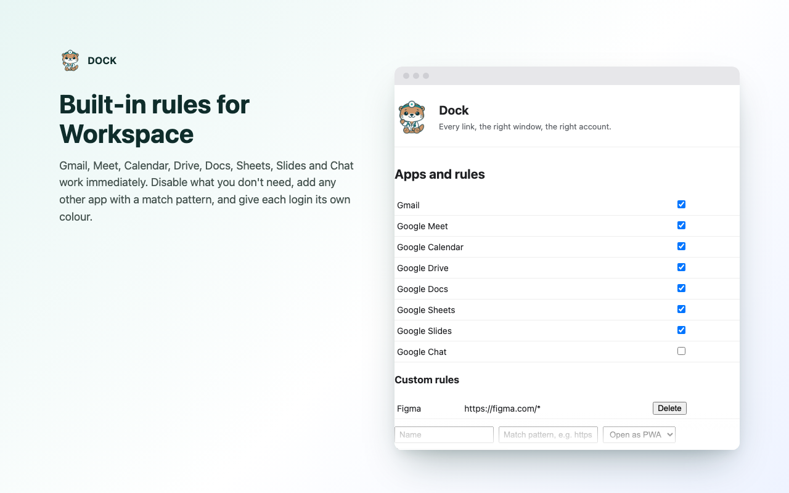
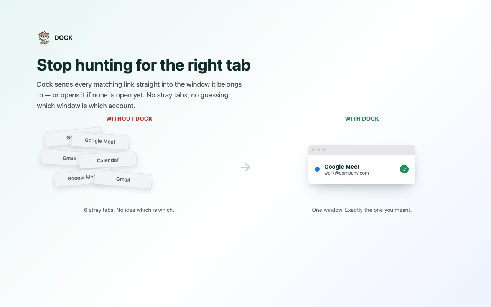

Every web-app link, in the right window, for the right account.
Clicking a Meet link in Gmail or Calendar usually opens a new browser tab instead of the app you already have installed. Dock fixes that — without replacing your browser, without an account, without a single network request.
Free and open source. Prefer to build it yourself? See Install below.
What it actually does
Real screenshots of the real extension — not mockups.
The switcher
Every app window, two keystrokes away
Ctrl/Cmd+Shift+Space opens a fuzzy-searchable popup grouped by login, so you can see how many windows each account has open. Live calls surface first. Close one window or an entire account's windows with a click.

Rules & settings
Built-in rules for Workspace
The Google Workspace apps you already use work immediately — see the full list in Settings. Disable what you don't need, add any other app with a match pattern, and give each login its own colour.

Why it exists
Stop hunting for the right tab
Dock sends every matching link straight into the window it belongs to — or opens it if none is open yet. No stray tabs, no guessing which window is which account.

Features
Link routing
A matching link opens or focuses the existing PWA window instead of a new tab. Hold Shift to bypass it for one click.
Account awareness
Routes to the window for the account the link actually names — even when you switch accounts from inside the PWA itself.
Switcher
Ctrl/Cmd+Shift+Space, type to search, Enter to focus. Grouped by account, live calls first.
Account colours
Each login gets an automatic, editable colour shown as a toolbar badge and throughout the switcher.
Custom rules
Add Figma, Notion, or anything else you use as a PWA. Import and export rules as JSON.
Tidy
One click merges duplicate windows of an app into the one you actually want and closes the rest.
No network requests. Ever.
Dock has no backend, no analytics, no account. Everything it keeps — rules, account colours, the list of currently open app windows — stays in Chrome's own local storage, on your device. Nothing is synced, transmitted, or sent anywhere.
Read the privacy policyInstall
Add to Chrome from the Web Store — or build it yourself from source below.
git clone https://github.com/sirius93/dock.git
cd dock
npm install
npm run build-
Open
chrome://extensions, enable Developer Mode, click Load unpacked, and select thedist/foldernpm run buildproduced. -
Install the Google apps you use as PWAs — the install icon in
Chrome's address bar, or
chrome://apps. - Click a matching link and watch it land in the right window instead of a new tab.